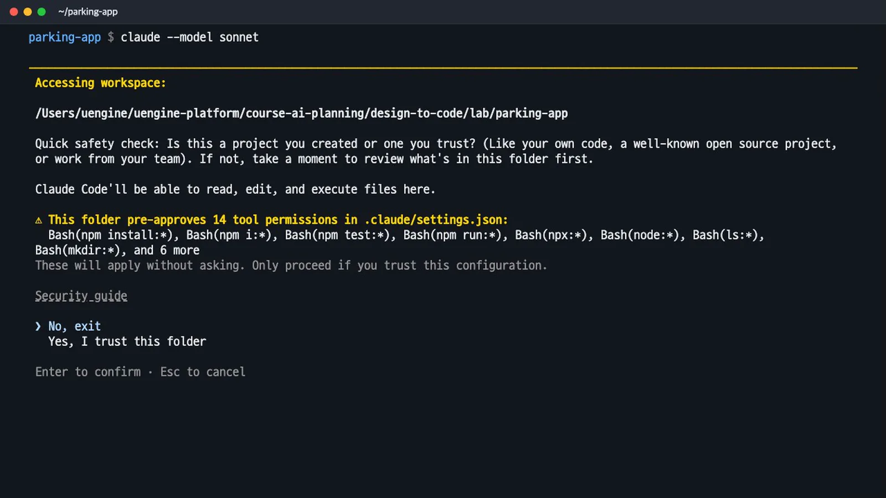
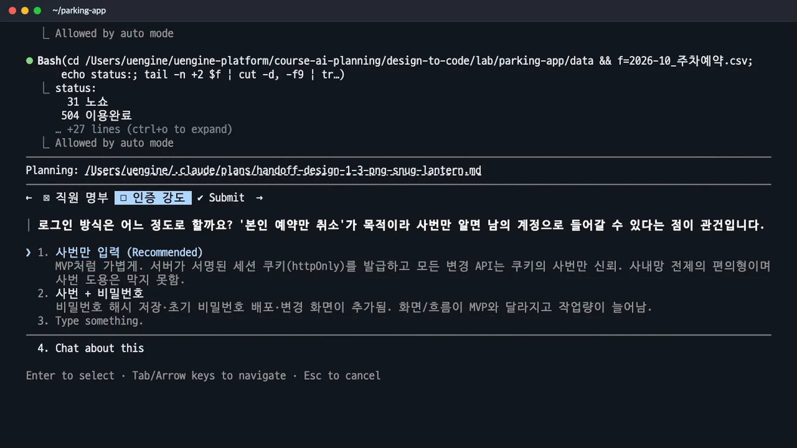
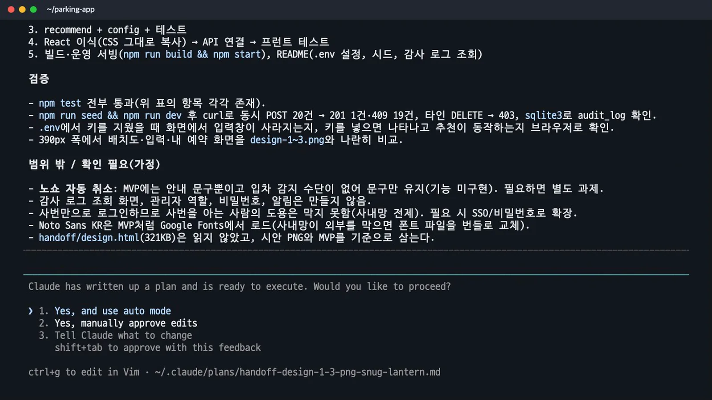
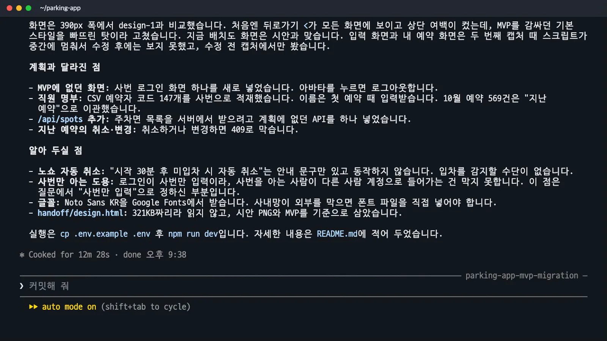
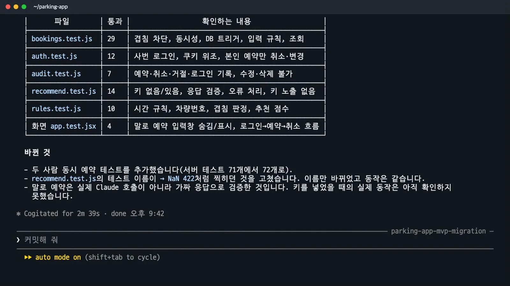
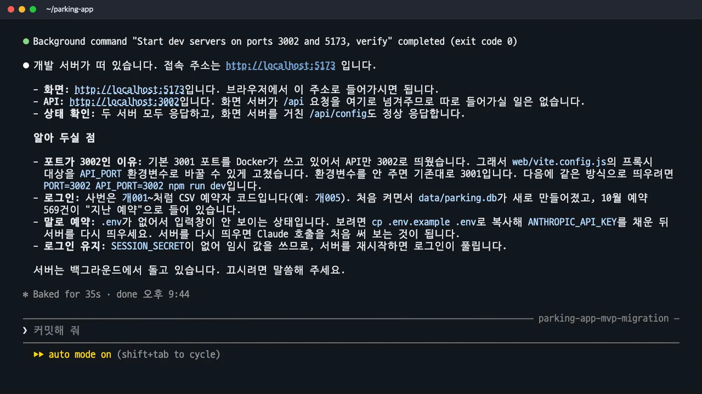

디자인 시안과 MVP를 React(Vite)·Express·SQLite 프로젝트로 옮깁니다. 계획 모드에서 질문과 검증 기준을 확인한 뒤 서버의 중복 예약 차단, 사번 로그인, 감사 기록과 자동 테스트를 구현합니다.
무엇을 · 왜#
이 장에서는 같은 화면에 서버의 규칙을 더합니다. Claude Code는 내 PC의 파일을 읽고 고치며 설치·테스트·서버 실행 명령을 수행합니다. 먼저 계획을 확인하고 승인한 뒤 구현합니다.
이번 기준은 2026년 11월 7일, Claude Code 2.1.319와 Sonnet 5.5입니다. 준비물은 Node.js, Claude Code를 사용할 유료 플랜, CSV 2개와 동작하는 MVP의 내보내기 파일입니다.
따라 하기#
1. 폴더와 권한 준비#
parking-app 폴더에 다음과 같이 파일을 배치합니다.
parking-app/
├── handoff/
│ ├── design-1.png
│ ├── design-2.png
│ ├── design-3.png
│ ├── design.html
│ └── mvp.html
├── data/
│ ├── 주차면.csv
│ └── 2026-10_주차예약.csv
└── .claude/
└── settings.json
.claude/settings.json에는 아래 내용을 그대로 저장합니다.
{
"permissions": {
"allow": [
"Bash(npm install:*)", "Bash(npm i:*)", "Bash(npm test:*)", "Bash(npm run:*)", "Bash(npx:*)", "Bash(node:*)",
"Bash(ls:*)", "Bash(mkdir:*)", "Bash(cat:*)", "Bash(curl:*)", "Bash(sqlite3:*)",
"Bash(git add:*)", "Bash(git commit:*)", "Bash(git status:*)"
]
}
}
설치·테스트·실행·파일 확인·감사 조회 등에 사용할 14개 권한을 미리 허용하는 설정입니다. parking-app 폴더로 이동한 뒤 실행합니다.
claude --model sonnet
처음 여는 폴더이므로 신뢰 여부를 묻습니다. 「This folder pre-approves 14 tool permissions in .claude/settings.json」과 「These will apply without asking」이라는 경고가 표시됩니다. 미리 허용한 명령은 다시 묻지 않으므로 설정을 확인하세요. 남이 준 폴더라면 여기서 멈추고 확인하세요.

이번에는 직접 준비한 폴더와 설정을 확인한 뒤 「Yes, I trust this folder」를 선택했습니다.
2. 계획 모드에서 P5 입력#
Shift+Tab으로 plan mode에 맞춥니다. 녹화에서는 auto mode에서 manual → accept edits → plan mode로 전환했습니다. 아래 요청은 마지막에 먼저 계획만 보여 달라고 명시합니다.
handoff 폴더에 디자인 시안(design-1~3.png)과 아티팩트로 만든 MVP(mvp.html)가 있어. 이걸 사내에서 실제로 쓸 앱으로 옮기려고 해. 화면과 흐름은 MVP와 똑같이 두고, React(Vite) 프런트와 Express API, SQLite 데이터베이스로 다시 짜 줘. MVP에서 못 하던 다섯 가지를 꼭 넣어 줘: ① 같은 자리에 시간이 겹치는 예약은 서버에서 막기(동시에 눌러도 하나만 성공) ② 사번으로 로그인하고 본인 예약만 취소하기 ③ 누가 언제 예약하거나 취소했는지 기록하기 ④ 말로 예약하는 기능은 서버에서 Claude API를 호출하고 키는 .env에 두기(키가 없으면 그 입력창은 숨기기) ⑤ 이 규칙들을 확인하는 자동 테스트. 먼저 계획만 보여 줘.
계획 모드에서는 파일을 고치기 전에 자료를 살펴보고 불명확한 조건을 묻습니다. 이번에는 10월 예약 기록의 상태값 등을 읽고 33초 뒤 질문 2개가 나왔습니다.
3. 질문 두 개에 답하기#
| 질문 | 제시된 선택 | 이번에 고른 답 |
|---|---|---|
| 직원 명부 | CSV 예약자 코드를 사번으로 사용 / 형식만 검사 / 명부 CSV 별도 준비 | CSV의 예약자 코드 147개를 사번으로 넣는 추천안 |
| 로그인 강도 | 사번만 입력 / 사번과 비밀번호 | 사번만 입력하고 서명된 httpOnly 쿠키를 쓰는 추천안 |

쿠키는 로그인한 사용자를 서버가 확인하는 수단입니다. 하지만 사번만 입력하는 방식은 그 사번의 실제 주인인지 증명하지 못합니다. Claude도 사번 도용을 막지 못한다고 설명했습니다. 이번 선택은 실습용이며 실제 운영 전에는 인증을 보강하세요.
두 답을 선택하고 Submit으로 제출합니다. 질문과 101줄 계획이 나오기까지 약 2분 20초가 걸렸습니다.
계획서에서 확인할 것#
계획서 전체를 복사하기보다 구현할 규칙과 확인 방법을 읽습니다. claude-code-plan.md의 구조는 npm workspaces로 server와 web을 나누고, 데이터는 다음 네 테이블에 저장하는 방식입니다.
| 테이블 | 맡는 데이터 |
|---|---|
spots |
주차면 ID·구역·유형·거리·비고 |
users |
사번·부서, 이름·차량번호와 기억 설정 |
bookings |
자리·날짜·시간·예약자와 예약 상태 |
audit_log |
누가 언제 어떤 예약 작업을 했는지 남기는 추가 전용 기록 |
다섯 가지 요구와 구현 방식#
| 요구 | 계획의 요점 |
|---|---|
| 겹침 예약 차단 | BEGIN IMMEDIATE 트랜잭션에서 확인 후 저장. BEFORE INSERT/UPDATE 트리거로 DB에서도 겹침 거부 |
| 본인 예약만 취소 | 쿠키의 사번만 신뢰하고 본문 사번은 무시. 타인 취소·변경은 403, 취소는 행 삭제 대신 상태 변경 |
| 감사 기록 | 생성·변경·취소와 거절 시도 기록. 트리거로 기록의 UPDATE/DELETE 금지 |
| 서버의 Claude 호출 | @anthropic-ai/sdk는 서버에서만 사용. 키는 .env에 두고 모델 출력은 허용된 값인지 검증 |
| 자동 테스트 | 메모리 DB와 가짜 Claude 응답으로 규칙을 시험하고 실제 동시 요청도 확인 |
트랜잭션은 확인과 저장을 묶어 처리하는 단위입니다. DB 트리거는 앱을 거치지 않고 데이터를 넣어도 겹치는 예약을 거부하는 방어선입니다. 같은 자리의 시간이 겹치면 409로 거절하지만, 09–12와 12–15처럼 끝과 시작만 맞닿는 예약은 허용합니다.
API 키가 없으면 입력창을 만들지 않고 추천 API도 404를 반환하도록 계획했습니다. 추천이 나온 뒤의 예약은 기존 예약 API를 거치므로 같은 예약 규칙을 적용합니다.
검증 기준과 범위 밖 항목#
| 영역 | 계획서에서 발췌한 확인 항목 |
|---|---|
| 겹침 | 완전·부분·포함 겹침은 409, 경계 접촉과 취소 후 재예약 허용 |
| 동시성 | 서로 다른 사번 20명의 요청 중 201은 정확히 1건, 나머지 409, 활성 예약 1행 |
| DB 방어선 | API를 거치지 않은 직접 INSERT도 트리거가 거부 |
| 인증 | 쿠키 없음·명부에 없는 사번은 401, 본인 취소 200, 타인 취소 403 |
| 규칙 | 시간 단위·범위, 과거 시작, 7일 초과, 차량번호, 같은 사람 시간 중복 |
| 감사 | 작업과 거절 시 기록 생성, UPDATE/DELETE 불가 |
| Claude | 키 없음·가짜 응답·깨진 JSON 처리, 응답에 키 문자열 없음 |
| 화면 | 입력창 숨김, 로그인→예약→내 예약→취소 흐름 |
노쇼 자동 취소는 입차 감지 수단이 없어 제외했습니다. 감사 조회 화면, 관리자 역할, 비밀번호, 알림도 범위 밖입니다. 파일로 넣은 design.html은 읽지 않았고 시안 PNG와 MVP를 기준으로 삼았다고 계획서에 적혀 있습니다.

구현 대상과 검증 기준, 제외 항목을 확인한 뒤 「Yes, and use auto mode」로 승인합니다. 승인 다음부터 구현이 시작됩니다.
구현 결과#
구현에는 12분 28초가 걸렸습니다. 도중에 zsh의 glob·단어 분리 오류와 macOS bash 3의 mapfile 문제를 스스로 수정했습니다. 디자인 PNG와 390px 폭 화면을 비교한 뒤 뒤로가기와 여백도 고쳤습니다.
| 항목 | 구현 직후 결과 |
|---|---|
| 자동 테스트 | 총 75개 통과: 서버 71·화면 4 |
| 실제 HTTP 동시 20건 | 201 성공 1건·409 충돌 19건 |
| 타인 취소 | 403으로 거절 |
| 감사 | 기록 확인 |
| 완료 보고에서 짚은 변경 | 사번 로그인 화면, /api/spots 추가, 지난 예약 취소·변경 409 |

실제 Claude 호출은 API 키가 없어 가짜 응답으로만 검증했습니다. 테스트 통과를 실제 외부 API 호출 성공으로 읽지 마세요.
P6 · 두 사람 동시 예약 테스트#
테스트를 돌리고 결과를 보여 줘. 두 사람이 같은 자리를 동시에 예약하는 테스트도 포함해 줘.
이 요청 뒤 두 사람 동시 예약 테스트를 추가했습니다. 서로 다른 사번으로 같은 자리·시간을 예약했을 때 201과 409가 한 건씩 나오는지 확인합니다. 활성 예약 1행, 감사 기록의 create 1건·conflict 1건도 검사했습니다.
새 테스트는 5번 반복해서 통과했고, 전체는 76개(서버 72·화면 4)가 됐습니다. 걸린 시간은 2분 39초입니다.
| 테스트 파일 영역 | 통과 수 |
|---|---|
| bookings | 29 |
| auth | 12 |
| audit | 7 |
| recommend | 14 |
| rules | 10 |
| 화면 | 4 |

P7 · 실행과 포트 충돌#
개발 서버를 띄우고 접속 주소를 알려 줘.
35초 뒤 실행 결과가 나왔습니다. 3001 포트를 Docker가 사용 중이어서 API를 3002로 옮겼고, Vite 프록시도 API_PORT 환경변수를 보도록 바꿨습니다. 포트가 겹치면 안내된 API 포트와 프록시 설정을 함께 확인하세요.
http://localhost:5173

.env가 없어 말로 예약하는 입력창은 숨겨졌습니다. SESSION_SECRET도 없어 서버를 재시작하면 로그인이 풀립니다. 실행된 주소에서 실제로 써 보기로 이어 가며, 두 사용자의 화면과 감사 기록을 대조합니다.